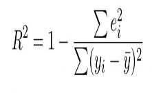

IDA117V
Introduction to Machine learning.
Machines learning from Data
Machines /Models learning to predict the future based on patterns seen from current data.
Learns patterns [Features ] and resulting outcomes [targets] of such patterns.
Not as straightforward like that, because data may be very dirty. Chances are the machine can learn incorrect things from the data.

Data preprocessing + Training mechanisms
EDA , so that we can see what the data is, preprocess the data ie removing NaN values.
Selecting training / testing mechanisms that will reduce chances of learning the noise.

Supervised learning
Models are given what exactly to learn, must learn to associate certain patterns with specific targets. There are features[inputs] and targets [outputs or labels].

Unsupervised machine learning
Models are learn patterns or categories that exist in the data. No labels or targets are given.
ie Group similar features / trends together.

Supervised Machine learning examples
Predict Insurance fraud /valid based on some features [0=fraud, 1=valid]
Id,policy number, policy status, alive , 0/1

Supervised Machine learning examples
Data about house prices prediction
Floor area, number of stories, size of yard, surburb R

Classification vs Regression
[ Features ] [target]
Example: based on certain weather conditions one can train a machine learning algorithm to predict rain or no rain will occur.
[Features] [ targert ]
Example: based on house features, location, size one can train a machine learning algorithm to predict the price of a house.

Classification vs Regression
The difference in classification and regression is important because there are some measurements that are used to evaluate specifically the regression model and cannot be used to evaluate classification models.

Classification: Binary class Multi-class
There are only two targets / outputs / classes in the data
More than two targets / outputs classes / in the data.

Linear regression
Regression: method that tries to determine the strength and nature of a relationship between the output (Y) and the independent variable s (X).
Linear regression: There is a linear relationship between the independent variable and the dependent variable: when independent variable changes, the dependent variable also changes linearly
Classic Example The price (Y) of a house may depend on the size ( X ) when the size of the house increases the price tend to increase.

Linear regression continues. Car weight vs mileage
Another example of Linear regression:

Identifying Linear relationships in data
Laerd Stats 2014

What a linear regression model learns
Linear regression models learns a line
y = mx + C Where y is the target or dependent variable and x is independent observations / variables and C is the y intercept.

A few lines can be drawn that estimates the relationship between x and y variables.
Linear regression

The residual
We would want to know how good the line / model fits the data. We want to see how much error is made by the model by calculating the difference between the predicted and the actual value:

Residuals
http://wiki.engageeducation.org.au/further-maths/data-analysis/residuals/

Residuals
More convenient to work with the squared residuals: e2
The best fit line will have a minimum sum of squared residuals ie sum of squared residuals from all the data points : ∑ ei2

Important measures of regression fit
The standard deviation of the residuals, also called the Root Mean Squared Error RMSE. A good rmse value is close to 0. Eg [ 0.2 ]
RMSE = where n = total points in data.

RMSE for Multiple regression
Def:
Only one predictor [ X ] variable [independent variable], and the other varaible Y is the response or dependent variable.

RMSE for SLR and MLR
RMSE SLR RMSE MLR

Important measures of regression fit

Coefficient of determination R - Squared
Good R-squared is close to 1, [100%]

Overfitting and Underfitting
Model knows too well about the data and cannot generalize well to unseen data
Training accuracy is high. eg 90% Testing accuracy is very low. eg 60%
Models learned nothing from the data, and hence it cannot predict unseen data,
50% accuracy.

Preventing overfitting
Train with more data
Data augmentation [ artificial data ]
Feature selection, removing features that do not inform the outcome.

Classification

Predicting a class not a continuous variable
Models for classification
KNN
Logistic regression Decision trees SVM
ect.

Logistic regression
Types:

Linear regression vs Logistic regression
Linear regression y = mx+c Logistic regression: sigmoid function
Logistic regression
Chooses a threshold, say 0.5 and when the model returns more than 0.5 then the prediction is given the class above the sigmoid curve.

Example: LRM
Using indian diabetic data:

Example: KNN
KNN
K nearest neighbours: assumes that similar things have a lot of features in common. Examples Dog vs Cats , lions vs giraffes ect.
There is a small distance between similar things and a very huge difference between different things.

KNN
The K, is number , hyper parameter in the model, 1 - N.
The algorithm computes distance between a query point and K Neighbours of the point.

KNN
Using K= 2

KNN example.

Confusion matrix

Confusion matrix
Predicted diabetes and it is true
Predicted no diabetes and it is true
Predicted no diabetes yet there is diabetes [TYPE 2 Error]

Metrics: Recall ,precision and accuracy
Measuring Model performance:
Recall : TP/(TP+FN) if we make less of FN , TYPE 2 error, the recall will be close to 1.
Precision : TP/(TP+FP) , if we make less of FP TYPE 1 error the precision will be higher : close to 1.
Accuracy: (TP+TN) / (TP+FN+FP+TN)

Metrics : F1-Score
Better than accuracy because it take into account the class imbalances.
A harmonic mean between Recall and precision. Can be interpreted for all scenarios. As opposed to either recall or precision.